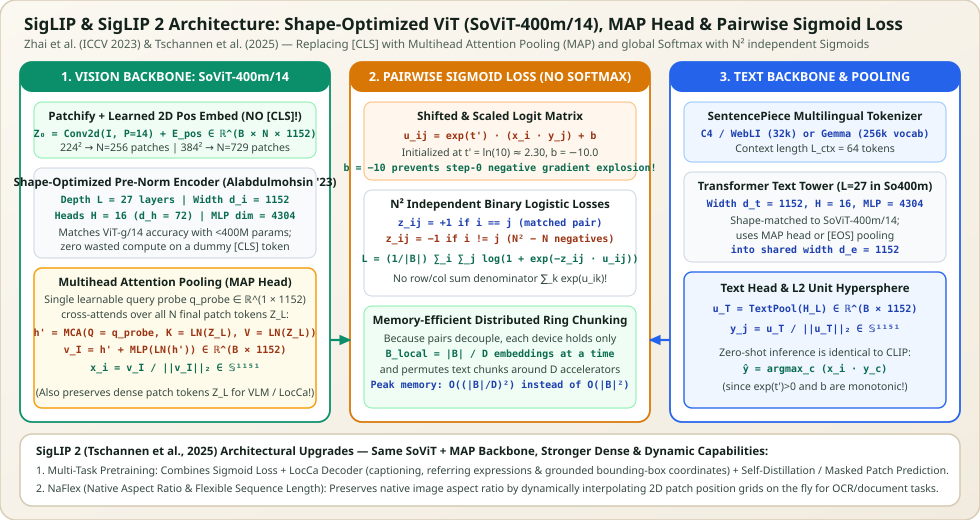

SigLIP & SigLIP 2 Architecture from First Principles: Shape-Optimized ViT (SoViT-400m/14), Multihead Attention Pooling (MAP), Pairwise Sigmoid Loss & NaFlex
While OpenAI's CLIP architecture launched modern vision–language pretraining, its reliance on a prepended [CLS] token, hand-picked ViT-Large/Huge dimensions, and a global $N \times N$ Softmax InfoNCE denominator created severe scaling bottlenecks. In SigLIP (Sigmoid Loss for Language Image Pre-Training, Zhai et al., ICCV 2023) and SigLIP 2 (Tschannen et al., 2025), Google Research re-engineered both the backbone architecture and the contrastive objective: (1) replacing hand-designed ViT-L/H with a compute-optimal Shape-Optimized Vision Transformer (SoViT-400m/14) that drops the [CLS] token entirely, (2) pooling patch representations with a Multihead Attention Pooling (MAP) cross-attention head, (3) replacing row/column Softmax normalization with $N^2$ independent pairwise Sigmoid binary logistic losses stabilized by a learnable bias $b_0 = -10$, and (4) extending the tower in SigLIP 2 with multi-task LocCa grounding and NaFlex native aspect-ratio tokenization. Today, SigLIP (`SoViT-400m/14@384px`) is the vision backbone inside PaliGemma, Gemma 3, Idefics3, and LLaVA-OneVision.


1. How SigLIP Differs from CLIP: Architecture & Objective
Before examining each module in detail, it is crucial to recognize that SigLIP is not merely "CLIP ViT-B/16 with a different loss function." Comparing official `google/siglip-so400m-patch14-384` against `openai/clip-vit-large-patch14-336` reveals four fundamental architectural changes inside the neural network itself:
- No
[CLS]Token in the Vision Encoder: CLIP prepends a dummy $\mathbf{x}_{\text{cls}}$ token to the $N$ image patches and carries $N+1$ tokens through all $L$ layers. SigLIP feeds only the $N = (H/P)(W/P)$ spatial patch tokens through the $L$-layer Transformer encoder ($196$ tokens at $224^2$, $256$ at $256^2$, $729$ at $384^2$). - Multihead Attention Pooling (MAP Head) Instead of
[CLS]Readout: Instead of slicing index $0$ (`x[:, 0]`) after Layer $L$, SigLIP attaches a dedicated Multihead Attention Pooling (MAP) block on top of the final layer $\mathbf{Z}_L \in \mathbb{R}^{B \times N \times d_i}$, where a single learnable query vector $\mathbf{q}_{\text{probe}} \in \mathbb{R}^{1 \times d_i}$ cross-attends over all $N$ patch tokens, followed by a residual MLP. - No
ln_pre, ExactGELU(or `gelu_pytorch_tanh`), and Bias-Enabled Patch Stem: Unlike CLIP's GPT-derived ViT (which used bias-free `conv1`, an extra `ln_pre` LayerNorm before Block 1, and `QuickGELU`), SigLIP follows the clean Google `big_vision` ViT design: `conv1` retains its bias (`bias=True`), there is no `ln_pre` before Block 1, and the MLP uses standard `GELU`. - Shape-Optimized Backbone Dimensions (`SoViT-400m/14`): Rather than jumping from ViT-Large ($307\text{M}$ vision params) to ViT-Huge ($632\text{M}$) or ViT-Giant ($1.01\text{B}$), SigLIP uses Alabdulmohsin et al.'s (NeurIPS 2023) compute-optimal shape scaling law: $d_i = 1152$, $L = 27$ layers, $H = 16$ heads ($d_h = 72$), and $d_{\text{mlp}} = 4304$.
2. The Vision Backbone: Shape-Optimized ViT (SoViT-400m/14)
In standard ViT model families (Dosovitskiy et al., 2020; Zhai et al., 2022), width $d$, depth $L$, and MLP expansion $4d$ were chosen by heuristic convention inherited from BERT (`ViT-B`: $d=768, L=12$; `ViT-L`: $d=1024, L=24$; `ViT-H`: $d=1280, L=32$; `ViT-g`: $d=1408, L=40, d_{\text{mlp}}=6144$).
In Getting ViT in Shape: Scaling Laws for Compute-Optimal Model Design (Alabdulmohsin et al., NeurIPS 2023), Google derived power-law scaling exponents for each architectural dimension (width $d$, depth $L$, MLP dimension $d_{\text{mlp}}$) as a function of total compute budget $C$. They discovered that:
- Standard `ViT-L/14` ($d=1024, L=24, d_{\text{mlp}}=4096$) and `ViT-g/14` ($1.01\text{B}$ parameters) are over-parameterized in depth and MLP ratio relative to their optimal compute frontier.
- For a target compute budget equivalent to training a $400\text{M}$-parameter vision tower, the optimal shape is
SoViT-400m/14:$$d_i = 1152, \qquad L = 27\text{ layers}, \qquad H = 16\text{ heads } (d_h = 72), \qquad d_{\text{mlp}} = 4304 \approx 3.736 \, d_i$$
Notice that $d_h = 1152 / 16 = 72$ (rather than $64$) and the MLP ratio is $4304 / 1152 \approx 3.736$ (rather than $4.0$). Despite having only $\sim 400\text{M}$ vision parameters (less than $40\%$ of `ViT-g/14`'s $1.01\text{B}$ parameters), `SoViT-400m/14` matches or beats `ViT-g/14` across classification, retrieval, and VLM downstream tasks while running more than $2.2\times$ faster!
Patch Embedding Without [CLS]
Given an input image $\mathbf{I} \in \mathbb{R}^{B \times 3 \times H \times W}$ and patch size $P = 14$ (or $P = 16$), SigLIP extracts $N = (H/P)(W/P)$ patch tokens and adds a learnable 2D-interpolatable positional embedding $\mathbf{E}_{\text{pos}} \in \mathbb{R}^{1 \times N \times d_i}$ directly—with no `[CLS]` token and no `ln_pre`:
For `siglip-so400m-patch14-384` ($H = W = 384, P = 14$), $\lfloor 384 / 14 \rfloor = 27$, yielding a $27 \times 27 = 729$ patch grid ($\mathbf{Z}_0 \in \mathbb{R}^{B \times 729 \times 1152}$). These $N$ tokens pass through $L = 27$ Pre-Norm Transformer blocks followed by a final encoder LayerNorm $\tilde{\mathbf{Z}}_L = \operatorname{LN}_{\text{post}}(\mathbf{Z}_L) \in \mathbb{R}^{B \times N \times d_i}$.
3. Multihead Attention Pooling (MAP Head) Derived Step by Step
How does SigLIP collapse the $N$ post-encoder patch tokens $\tilde{\mathbf{Z}}_L \in \mathbb{R}^{B \times N \times d_i}$ into a single global image vector $\mathbf{v}_I \in \mathbb{R}^{B \times d_i}$ if there is no `[CLS]` token?
In Scaling Vision Transformers (Zhai et al., CVPR 2022), the authors showed that carrying a `[CLS]` token through all $L$ layers wastes compute and forces early layers to split capacity between local patch processing and global summary aggregation. Instead, SigLIP uses a Multihead Attention Pooling (MAP) Head at the very end of the encoder:
- Define a single learnable query probe vector $\mathbf{q}_{\text{probe}} \in \mathbb{R}^{1 \times 1 \times d_i}$, broadcast across the batch to $\mathbf{Q}_0 \in \mathbb{R}^{B \times 1 \times d_i}$.
- Perform $H$-head cross-attention where $\mathbf{Q}_0$ is the query and the normalized patch sequence $\tilde{\mathbf{Z}}_L \in \mathbb{R}^{B \times N \times d_i}$ supplies both the keys and the values:
$$\mathbf{h}' = \operatorname{MHA}\!\left(Q = \mathbf{Q}_0,\; K = \tilde{\mathbf{Z}}_L,\; V = \tilde{\mathbf{Z}}_L\right) \in \mathbb{R}^{B \times 1 \times d_i}$$Specifically, for each head $h \in \{1, \dots, H\}$ with head dimension $d_h = d_i / H$:$$\mathbf{q}_h = \mathbf{Q}_0 W_Q^{(h)} \in \mathbb{R}^{B \times 1 \times d_h}, \quad \mathbf{K}_h = \tilde{\mathbf{Z}}_L W_K^{(h)} \in \mathbb{R}^{B \times N \times d_h}, \quad \mathbf{V}_h = \tilde{\mathbf{Z}}_L W_V^{(h)} \in \mathbb{R}^{B \times N \times d_h}$$$$\boldsymbol{\alpha}_h = \operatorname{softmax}\!\left(\frac{\mathbf{q}_h \mathbf{K}_h^\top}{\sqrt{d_h}}\right) \in \mathbb{R}^{B \times 1 \times N}, \qquad \mathbf{h}' = \operatorname{Concat}_h\!\left(\boldsymbol{\alpha}_h \mathbf{V}_h\right) W_{\text{out}} \in \mathbb{R}^{B \times 1 \times d_i}$$
- Apply a Pre-Norm residual MLP block on top of the pooled token $\mathbf{h}'$ (note that in `big_vision` / HuggingFace `SiglipMultiheadAttentionPoolingHead`, the residual block adds $\operatorname{MLP}(\operatorname{LN}(\mathbf{h}'))$ directly to $\mathbf{h}'$) and $\ell_2$-normalize:
$$\mathbf{v}_I = \operatorname{squeeze}_1\!\left(\mathbf{h}' + \operatorname{MLP}\!\left(\operatorname{LN}(\mathbf{h}')\right)\right) \in \mathbb{R}^{B \times d_i}, \qquad \hat{\mathbf{x}} = \frac{\mathbf{v}_I}{\|\mathbf{v}_I\|_2} \in \mathbb{S}^{d_i - 1}$$
Why VLM Builders Love `SoViT + MAP`: In CLIP ViT, the last layer $\mathbf{Z}_L$ is optimized so that token $0$ (`[CLS]`) holds the global text-aligned feature, which causes the spatial patch tokens $\mathbf{Z}_L^{1:N}$ in the final layer to lose local spatial fidelity (forcing LLaVA-1.5 to extract features from the penultimate layer $L-1$). In SigLIP, because the MAP head sits above $\tilde{\mathbf{Z}}_L$, all $N = 729$ tokens of $\tilde{\mathbf{Z}}_L$ remain pure, spatially grounded patch representations that can be fed directly into an LLM projector!
4. Pairwise Sigmoid Loss vs. Softmax InfoNCE & Why $b_0 = -10$ Is Essential
In OpenAI CLIP, given unit-normalized image embeddings $\hat{\mathbf{x}}_i \in \mathbb{S}^{d-1}$ and text embeddings $\hat{\mathbf{y}}_j \in \mathbb{S}^{d-1}$ across a global minibatch of size $|\mathcal{B}|$, the symmetric Softmax InfoNCE loss couples every pair $(i, j)$ through two global partition-function sums:
This global softmax denominator creates two severe engineering and optimization problems:
- All-to-All Distributed Memory Bottleneck: Computing $\sum_{j=1}^{|\mathcal{B}|} \exp(t\,\hat{\mathbf{x}}_i \cdot \hat{\mathbf{y}}_j)$ requires gathering all $|\mathcal{B}|$ embeddings onto every accelerator and materializing row/column reductions over the $|\mathcal{B}| \times |\mathcal{B}|$ matrix.
- Asymmetry & Batch-Size Sensitivity: Softmax forces relative competition within the batch: a single mislabeled hard negative $(i, j^*)$ in a web-scraped batch dominates the denominator $\sum_j \exp(t\,\hat{\mathbf{x}}_i \cdot \hat{\mathbf{y}}_j)$ and distorts the gradient for all other pairs in row $i$.
The Decoupled Pairwise Sigmoid Objective
Zhai et al. (2023) replace the row and column softmax cross-entropies with $|\mathcal{B}|^2$ independent binary logistic regression problems. Define the binary pair label $z_{ij}$ as:
And define the shifted, temperature-scaled pairwise logit $u_{ij}$ with learnable log-temperature $t'$ ($t = \exp(t')$) and a learnable scalar bias $b \in \mathbb{R}$:
The SigLIP loss averages the binary logistic loss $-\ln \sigma(z_{ij} u_{ij}) = \ln(1 + \exp(-z_{ij} u_{ij}))$ normalized by the number of positive pairs $|\mathcal{B}|$:
Worked Numerical Proof: Why Initializing $b_0 = -10$ and $t'_0 = \ln(10)$ Prevents Step-0 Collapse
At random initialization (step $0$), unit-normalized vectors $\hat{\mathbf{x}}_i, \hat{\mathbf{y}}_j \in \mathbb{S}^{1151}$ are nearly orthogonal: $\langle \hat{\mathbf{x}}_i, \hat{\mathbf{y}}_j \rangle \approx 0$ for both positives ($i=j$) and negatives ($i \neq j$).
- What goes wrong if $b_0 = 0$? If $b_0 = 0$, then $u_{ij} \approx 0$, so every pair predicts probability $\sigma(u_{ij}) = \sigma(0) = 0.50$. For a batch size of $|\mathcal{B}| = 32{,}768$, there is $1$ positive ($z_{ii}=+1$) and $32{,}767$ negatives ($z_{ij}=-1$) per row! Each negative pair incurs gradient $\frac{\partial \ell_{ij}}{\partial u_{ij}} = \sigma(u_{ij}) = +0.50$, so the total negative gradient per row is $32{,}767 \times 0.50 = 16{,}383.5$ versus $-0.50$ from the single positive—a **$32{,}767 : 1$ gradient imbalance** that forces the first optimizer step to violently collapse all embeddings just to push dot products negative!
- How $b_0 = -10.0$ fixes step $0$: When $b_0 = -10.0$ (with $\langle \hat{\mathbf{x}}_i, \hat{\mathbf{y}}_j \rangle \approx 0$), the initial logit is $u_{ij} \approx -10.0$. Therefore, for each of the $32{,}767$ negative pairs ($z_{ij} = -1$):
$$\ell_{\text{neg}} = \ln(1 + \exp(-10)) \approx 0.0000454, \qquad \left|\frac{\partial \ell_{\text{neg}}}{\partial u_{ij}}\right| = \sigma(-10) = \frac{1}{1 + e^{10}} \approx 4.54 \times 10^{-5}$$Summed across $32{,}767$ negatives, the total negative gradient magnitude per row is $32{,}767 \times 4.54 \times 10^{-5} \approx 1.49$, which is on the exact same $\mathcal{O}(1)$ scale as the positive pair gradient $\sigma(+10) \approx 0.99995$! Thus the network starts with balanced positive/negative gradients from step $0$.
Distributed Ring-Chunked Training ($O((|\mathcal{B}|/D)^2)$ Memory)
Because $\mathcal{L}_{\text{SigLIP}} = \frac{1}{|\mathcal{B}|}\sum_{i=1}^{|\mathcal{B}|}\sum_{j=1}^{|\mathcal{B}|} \ell(i, j)$ is a pure double sum with no cross-column denominator inside a logarithm, we can partition the $|\mathcal{B}| \times |\mathcal{B}|$ matrix across $D$ devices into $D \times D$ tiles of size $b_{\text{loc}} \times b_{\text{loc}}$ (where $b_{\text{loc}} = |\mathcal{B}| / D$):
- Device $d$ holds its local image shard $\hat{\mathbf{X}}_d \in \mathbb{R}^{b_{\text{loc}} \times d_e}$ stationary in SRAM/HBM.
- In step $s \in \{0, \dots, D-1\}$, device $d$ computes the $b_{\text{loc}} \times b_{\text{loc}}$ sigmoid loss against its current text shard $\hat{\mathbf{Y}}_{(d+s) \bmod D}$, accumulates the gradient, and passes the text shard to its left neighbor in a ring (`send/recv` collective).
- Peak logit matrix memory per device is only $b_{\text{loc}}^2$ instead of $|\mathcal{B}|^2$, enabling SigLIP to train at $|\mathcal{B}| = 32{,}768$ or $1\text{M}$ on a small pod without running out of HBM—and notably, SigLIP's performance saturates by $|\mathcal{B}| = 16\text{k}\text{–}32\text{k}$ (and works well even at $|\mathcal{B}| = 4\text{k}$).
5. SigLIP 2 (2025): Unified Multi-Task Pretraining (LocCa + Self-Distillation) & NaFlex
In SigLIP 2 (Tschannen et al., 2025), Google kept the exact same `SoViT` + `MAP` architecture (so `SigLIP 2` checkpoints are a 100% drop-in weight replacement for `SigLIP 1` in any code or VLM), while upgrading the training recipe in two major ways:
- Multi-Task Dense & Semantic Pretraining: Pure image–text contrastive training focuses on global image semantics and can overlook fine spatial localization. During pretraining, SigLIP 2 attaches an auxiliary lightweight causal Transformer decoder (following LocCa, Wan et al., 2024) that cross-attends to the unpooled vision patch tokens $\tilde{\mathbf{Z}}_L \in \mathbb{R}^{B \times N \times d_i}$ to predict:
- Standard image captions,
- grounded referring expressions, and
- region-specific bounding-box coordinates (`[ymin, xmin, ymax, xmax]`).
NaFlex(Native Aspect Ratio & Flexible Sequence Length): Standard ViT/SigLIP checkpoints resize every input image into a fixed square ($224 \times 224$ or $384 \times 384$), which distorts wide banners, tall receipts, and portrait documents. SigLIP 2'sNaFlexvariant preserves the image's native aspect ratio $(H_m, W_m)$ up to a chosen maximum token budget $N_{\max} \in \{128, 256, 576, 1024\}$ by:- Resizing each image so that $(H_m / P) \times (W_m / P) \le N_{\max}$ while keeping $H_m / W_m$ as close as possible to the original aspect ratio,
- Dynamically bilinearly interpolating the learned 2D patch position grid $\mathbf{E}_{\text{pos}}$ to the per-image patch grid $(H_m/P, W_m/P)$ on the fly, and
- Using attention padding masks inside the Transformer encoder and MAP head so variable-resolution images can be batched together seamlessly.
6. Architectural Comparison: OpenAI CLIP vs. SigLIP vs. SigLIP 2
| Dimension / Feature | OpenAI CLIP ViT-L/14@336px | SigLIP ViT-B/16 | SigLIP SoViT-400m/14@384px | SigLIP 2 So400m/14 ( & NaFlex) |
|---|---|---|---|---|
| Vision Width / Depth / Heads | $d_i=1024, L=24, H=16$$d_{\text{mlp}}=4096$ | $d_i=768, L=12, H=12$$d_{\text{mlp}}=3072$ | $d_i=1152, L=27, H=16$$d_{\text{mlp}}=4304$ ($d_h=72$) | $d_i=1152, L=27, H=16$$d_{\text{mlp}}=4304$ ($d_h=72$) |
Prepended [CLS] Token? |
Yes ($576 + 1 = 577$ tokens) | No ($196$ patch tokens) | No ($27\times 27 = 729$ tokens) | No ($729$ or dynamic NaFlex) |
Pre-Block 1 Norm (ln_pre) |
Yes (LayerNorm(1024)) |
No (standard ViT stem) | No (standard ViT stem) | No (standard ViT stem) |
| Vision Output Pooling Head | Slice [CLS] + ln_post + $W_i$ |
MAP Head (1-query cross-attn + MLP) | MAP Head (1-query cross-attn + MLP) | MAP Head (1-query cross-attn + MLP) |
| Text Tower Architecture | 12L Causal BPE ($L_{\text{ctx}}=77, d_t=768$) | 12L SentencePiece ($L_{\text{ctx}}=64, d_t=768$) | 27L SentencePiece ($L_{\text{ctx}}=64, d_t=1152$) | 27L Gemma-256k Multilingual ($L_{\text{ctx}}=64$) |
| Contrastive Loss Function | Symmetric Softmax InfoNCE$\exp(t) \le 100$, no bias | Pairwise Sigmoid Loss$t'_0 = \ln(10), b_0 = -10$ | Pairwise Sigmoid Loss$t'_0 = \ln(10), b_0 = -10$ | Sigmoid + LocCa + Self-Distilldrop-in inference compatible |
| Zero-Shot ImageNet-1K Top-1 | $76.2\%$ | $76.7\%$ ($256^2$) | $83.2\%$ ($384^2$) | $84.1\%$ ($384^2$) |
7. Complete PyTorch Implementation: SiglipMAPHead, SoViT400m & SigLIPLoss
import math
import torch
import torch.nn as nn
import torch.nn.functional as F
class SiglipMAPHead(nn.Module):
"""
Multihead Attention Pooling (MAP) head used in SigLIP & SigLIP 2.
A single learnable query probe cross-attends over all N patch tokens,
followed by a Pre-Norm residual MLP block.
"""
def __init__(self, embed_dim: int = 1152, num_heads: int = 16, mlp_dim: int = 4304):
super().__init__()
self.probe = nn.Parameter(torch.randn(1, 1, embed_dim) / math.sqrt(embed_dim))
self.attn = nn.MultiheadAttention(embed_dim, num_heads, batch_first=True)
self.layernorm = nn.LayerNorm(embed_dim, eps=1e-6)
self.mlp = nn.Sequential(
nn.Linear(embed_dim, mlp_dim),
nn.GELU(approximate="tanh"),
nn.Linear(mlp_dim, embed_dim),
)
def forward(self, patch_tokens: torch.Tensor) -> torch.Tensor:
# patch_tokens: [B, N, d] (already passed through post-encoder LayerNorm)
B = patch_tokens.shape[0]
q = self.probe.expand(B, -1, -1) # [B, 1, d]
# Cross-attention: Query = probe [B, 1, d], Key = Value = patch_tokens [B, N, d]
h, _ = self.attn(query=q, key=patch_tokens, value=patch_tokens, need_weights=False)
# Pre-Norm residual MLP on the single pooled token
h = h + self.mlp(self.layernorm(h))
return h.squeeze(1) # [B, d]
class SiglipVisionTransformer(nn.Module):
"""
SigLIP Shape-Optimized Vision Transformer (default: SoViT-400m/14 @ 384px).
Note: No [CLS] token and no ln_pre; uses MAP head at the top.
"""
def __init__(
self,
image_size: int = 384,
patch_size: int = 14,
embed_dim: int = 1152,
depth: int = 27,
num_heads: int = 16,
mlp_dim: int = 4304,
):
super().__init__()
self.patch_size = patch_size
self.grid_size = image_size // patch_size
num_patches = self.grid_size ** 2
# 1. Patch extraction with bias=True (unlike CLIP's bias=False)
self.patch_embed = nn.Conv2d(
3, embed_dim, kernel_size=patch_size, stride=patch_size, bias=True
)
# 2. Learnable positional embedding for N patches ONLY (no +1 for [CLS])
self.pos_embed = nn.Parameter(torch.randn(1, num_patches, embed_dim) / math.sqrt(embed_dim))
# 3. L=27 Pre-Norm Transformer blocks (d=1152, H=16, d_mlp=4304)
encoder_layer = nn.TransformerEncoderLayer(
d_model=embed_dim,
nhead=num_heads,
dim_feedforward=mlp_dim,
dropout=0.0,
activation=F.gelu,
batch_first=True,
norm_first=True,
)
self.blocks = nn.TransformerEncoder(encoder_layer, num_layers=depth)
self.post_layernorm = nn.LayerNorm(embed_dim, eps=1e-6)
# 4. Multihead Attention Pooling (MAP) readout head
self.head = SiglipMAPHead(embed_dim=embed_dim, num_heads=num_heads, mlp_dim=mlp_dim)
def forward(self, x: torch.Tensor, return_patch_tokens: bool = False):
# [B, 3, H, W] -> [B, d, H/P, W/P] -> [B, N, d]
tokens = self.patch_embed(x).flatten(2).transpose(1, 2)
tokens = tokens + self.pos_embed
tokens = self.post_layernorm(self.blocks(tokens)) # [B, N, d]
pooled = F.normalize(self.head(tokens), dim=-1) # [B, d] on unit hypersphere
if return_patch_tokens:
return pooled, tokens # VLM / LocCa uses `tokens`; retrieval uses `pooled`
return pooled
class SigLIPLoss(nn.Module):
"""
Decoupled Pairwise Sigmoid Loss (Zhai et al., ICCV 2023).
Initialized with t'_0 = ln(10) and bias b_0 = -10.0.
"""
def __init__(self, init_t_prime: float = math.log(10.0), init_bias: float = -10.0):
super().__init__()
self.t_prime = nn.Parameter(torch.tensor(init_t_prime))
self.bias = nn.Parameter(torch.tensor(init_bias))
def forward(self, img_embeds: torch.Tensor, txt_embeds: torch.Tensor) -> torch.Tensor:
# Ensure unit L2 norm: [B, d]
x = F.normalize(img_embeds, dim=-1)
y = F.normalize(txt_embeds, dim=-1)
B = x.shape[0]
# Shifted & scaled pairwise logits u_ij = exp(t') * (x_i . y_j) + b
logits = torch.exp(self.t_prime) * (x @ y.t()) + self.bias # [B, B]
# Pairwise targets: +1 on diagonal, -1 off-diagonal
labels = 2.0 * torch.eye(B, device=x.device, dtype=x.dtype) - 1.0
# -log sigmoid(z_ij * u_ij) = softplus(-z_ij * u_ij), normalized by B
loss = -F.logsigmoid(labels * logits).sum() / B
return lossPrimary Papers & References
- Zhai et al. (2023), Sigmoid Loss for Language Image Pre-Training (SigLIP, ICCV 2023) — introduces the pairwise sigmoid contrastive objective with learnable bias $b_0 = -10$ and ring-chunked distributed training.
- Alabdulmohsin et al. (2023), Getting ViT in Shape: Scaling Laws for Compute-Optimal Model Design (NeurIPS 2023) — derives the `SoViT-400m/14` architecture ($d=1152, L=27, H=16, d_{\text{mlp}}=4304$).
- Zhai et al. (2022), Scaling Vision Transformers (CVPR 2022) — introduces Multihead Attention Pooling (MAP) as a superior replacement for `[CLS]` token readout.
- Tschannen et al. (2025), SigLIP 2: Multilingual Vision-Language Encoders with Improved Semantic Understanding, Localization, and Dense Features — unifies Sigmoid loss with `LocCa` grounded captioning, self-distillation, and `NaFlex` aspect-ratio-preserving tokenization.